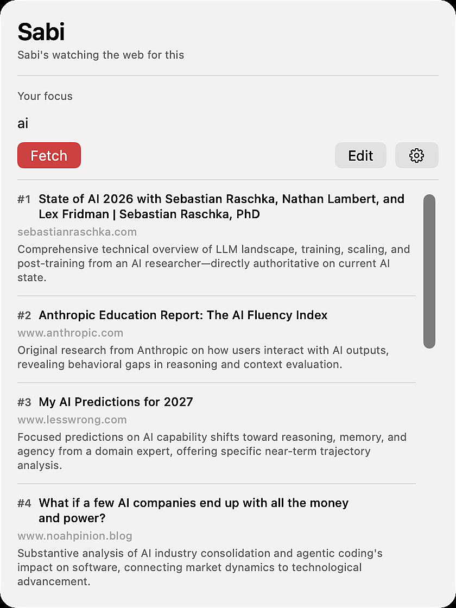
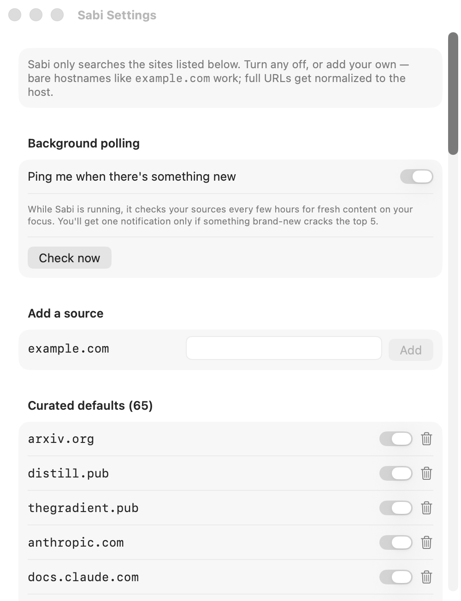
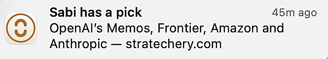

Sabi is a macOS menu bar app that watches your hand-picked list of sources and pings you when something new lands in your lane. Yours, not an algorithm's. Start with 60 curated defaults. Add your own. Disable anything. The list is yours. No feed. No ads. No doomscroll. Just signal.
Built for the OpenAI × Handshake Codex Creator Challenge · April 17–30, 2026
In motion
Type a few words. Haiku sharpens them. Brave fetches from your curated sources. The ranker reorders. You get a list worth reading — in the time it takes to refill your coffee.
Sped up 2× — about 30 seconds in real life.
The real thing
No dock icon, no separate window, no tab to forget. Sabi lives as a small icon in the top-right corner of your menu bar. Click it when you want a read, ignore it the rest of the time.
No dock noise. Just a quiet icon where apps live.

Type a focus. Sabi searches your sources, ranks, and hands back the top reads. One click to open.

Add. Disable. Remove. Toggle background polling. Every knob is exposed. No hidden defaults.
Real macOS banner. Click it → opens the article. Max one every few hours, only when something new cracks your top five.

The thesis
Algorithms decide what you read. Newsletters decide when. Recommendation feeds converge everyone toward the same five voices.
Sabi flips the default. You decide who's worth listening to. Sabi just checks for new work, quietly, on your behalf. The curation is the product.
Your sources (4)
Curated defaults (60)
The sources editor. In the real app, with a gear-click away.
Under the hood
Type "AI" or "black holes" or "industrial policy". Sabi turns it into a practitioner-framed focus, searches a curated web, and ranks what comes back. All in a handful of seconds.
Principles
One notification at most every few hours, only when something new cracks your top five. Your attention isn't the product.
60 curated defaults to get you started. But the point is to make it yours. Add a blog nobody's heard of. Disable the ones you already read daily. Remove what doesn't fit. The curation is the product.
SwiftUI menu bar app with MenuBarExtra,
NSBackgroundActivityScheduler,
real macOS notifications. Lives where your work lives.
Add a source. Disable a default. Turn off background polling. Every knob is exposed. Because one-size-fits-all feeds are how we got here in the first place.
How it works
Vague is fine. "black holes", "industrial policy", "compilers". Sabi doesn't need a prompt. It needs a direction.
A 15–30 word practitioner-framed focus, never a textbook definition. You see the refinement and can override it with use-as-is.
Site-restricted to your allowlist, past-week or past-month freshness, article-shape filter that drops homepages and hub pages.
A second pass caps two results per source so the list doesn't collapse into a single author's feed.
NSBackgroundActivityScheduler
re-checks with past-week freshness, compares against a seen-log,
and fires a single macOS notification only for brand-new top
hits. Click it → opens the article.
The starter pack
These are the defaults we ship with. A hand-assembled starting point across AI labs, economics, long-form essays, alignment thought, indie blogs, and academic preprints. Good enough to feel useful on day one, but the point is to shape it into the list you trust.
Built with
MainActor default isolation,
@Observable stores
LSUIElement, no
dock icon
Roadmap
Sabi is open source and moving fast. Here's what's live today and what's next.
brew install --cask sabi.
Zero-friction menu bar install via a public tap.
sabi fetch,
sabi sources,
sabi watch.
Shares the same core pipeline.
How it got built
The method
CRISPE is how you ship real software with an AI pair. Thin slices, end to end, every time.
CRISPE is a workflow for building with coding agents without losing the thread. The rule is simple: work in the smallest slice that can still run on its own, and don't move forward until that slice can answer four questions out loud.
A slice isn't a feature. A slice is the narrowest vertical cut through the system that still makes the app a little more useful than it was an hour ago. You plan it in the design doc, implement it with the agent, read the full diff yourself, and reconcile it back to the doc. Then you do it again.
When a slice can't pass the four gates, you don't ship it and you don't push through. You go back to the doc, rescope, and try again. That loop is the whole trick. Sabi is what came out of three days of it.
The four gates
A workflow for shipping with AI agents. Small, honest, repeatable.
Who made this
I was thinking about pagers. The actual physical thing. The kind that used to beep when somebody wanted you, and then you went and found out what they wanted. What if a computer could page me the same way, but only about stuff I'd actually want to know about? Not another notification. A ping, only when it's earned.
The truth is, I already do the hunt by hand. A new paper drops, a founder posts a build log, a demo ships that bends what was possible, and I go looking. Blog posts buried under ten other posts. Threads someone replied to a month ago. Write-ups on corners of the web most feeds ignore. When I find the right one it scratches an edge I didn't know I had. That's the signal I'm chasing.
But the hunt costs real time. Sabi is that hunt running in the background. It watches the sources I'd already check and pings me only when something new lands in my lane. That's it. That's the whole thing.
Sabi is open source. Clone the repo, build it in Xcode, and you're one menu bar icon away from a quieter web.